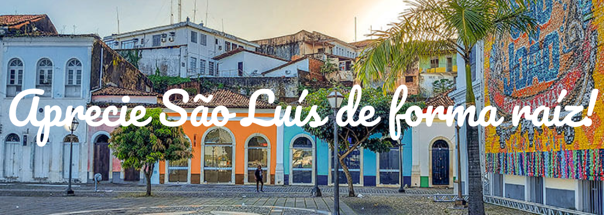

-
A cozinha ludovicense reúne influências indígena, portuguesa e africana. Venha conhecer a nossa culinaria.

CULINÁRIA
Visitar página -
venha conhecer a origem e a hostoria de nossa capital, e sinta a magia de nosso lugar.

HISTÓRIA
Visitar página -
Diga como foi sua experiência vivida em nossa capital.

FÓRUM
Visitar página -
A nossa capital é a maior cidade do Maranhão. Além de belezas naturais há também a nossa calorosa cultura.

CULTURA
Visitar página -
Nossos artesãos eternizam momentos em materiais feito com toda dedicação

ARTESANATO
Visitar página -
Você sabia que tem cidades, pontos turísticos e lugares muito interessantes para conhecer na ilha?

PONTOS TURÍSTICOS
Visitar página
